전자계산기제어산업기사 (2020-06-06 기출문제)
1과목: 전자회로
1. 듀티 사이클(Duty cycle)이 0.5이고 펄스폭이 0.8μs인 펄스의 주기는 몇 μs 인가?
- 0.4
- 0.625
- 1.3
- 1.6
(정답률: 60%)

2. 다음 회로는 MOSFET의 어느 영역에서 동작하는가? (단, μnCox = 100μA/V2, VTH = 0.4V 이다.)
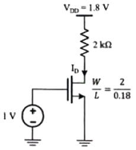
- Cutoff Region
- Triode Region
- Saturation Region
- 구별할 수 없다.
(정답률: 알수없음)
3. 변조도가 40%인 진폭 변조 송신기에서 반송파의 평균전력이 500mW 일 때 변조된 출력의 평균전력은 몇 mW 인가?
- 450
- 500
- 540
- 650
(정답률: 알수없음)
4. 다음 회로의 전압이득 |Av|는 얼마인가? (단, R=100kΩ, Rf=50kΩ, R1=R2=10kΩ 이다.)
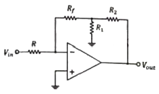
- 1
- 1.1
- 10
- 11
(정답률: 알수없음)
5. 다음 그림과 같은 회로에서 RL에 50mA의 전류가 흐를 때 RL(Ω)은? (단, Vin = 5V, R1 = 10kΩ, R2 = 470kΩ 이다.)
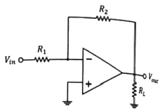
- 47
- 470
- 4700
- 47000
(정답률: 알수없음)
6. 이상적인 연산증폭기의 특징으로 틀린 것은?
- 대역폭이 무한대이다.
- 전압이득은 무한대이다.
- 입력임피던스는 무한대이다.
- 온도에 대하여 특성 드리프트가 무한대이다.
(정답률: 알수없음)
7. Switching Device인 TR의 문제점으로 옳은 것은?
- C-E 사이의 스위칭 속도가 빠르다.
- 베이스에 전류가 흐른다.
- C-E 사이의 전류용량이 크다.
- 베이스전류에 의하여 컬렉터 전류가 증폭이 된다.
(정답률: 알수없음)
8. 그림과 반파 정류회로에서 다이오드의 최대 역방향 전압(PIV)은 약 몇 V 인가? (단, 입력 교류 전압 Vin의 실효값은 10V 이다.)
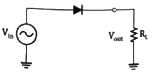
- 10
- 9.3
- 14.14
- 13.44
(정답률: 알수없음)
9. 120V, 60Hz인 사인파가 반파 정류기에 공급될 때, 출력 주파수는 몇 Hz 인가?
- 0
- 60
- 30
- 120
(정답률: 알수없음)
10. 전압 레귤레이터(Regulator) IC 7912의 출력전압은 몇 V 인가? (단, 입력전압은 IC 동작전압 범위라 가정)
- +12
- +5
- -12
- -5
(정답률: 알수없음)
11. 병렬전류 궤환 증폭기의 궤환량 β는? (단, Vf : 궤환전압, Vo : 출력전압, If : 궤환전류, Io : 출력전류이다.)
- If/Io
- If/Vo
- Vf/Vo
- Vf/Io
(정답률: 알수없음)
12. 전류이득이 약 1이고, 전압이득 및 출력임피던스가 매우 높은 증폭기는?
- 이미터 접지 증폭기
- 컬렉터 접지 증폭기
- 베이스 접지 증폭기
- 모든 트랜지스터 증폭기
(정답률: 알수없음)
13. 정귀환 하는 회로로만 나열된 것은?
- 슈미트 트리거회로, 발진회로
- 미분회로, 적분회로
- 슈미트 트리거회로, 미분회로
- 발지노히로, 적분회로
(정답률: 알수없음)
14. 다음 회로의 전압이득은?
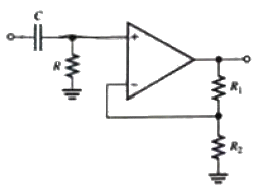
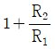
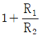
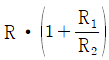
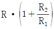
(정답률: 알수없음)
15. 활성영역에서 동작하는 BJT의 얼리 효과에 관한 설명으로 옳은 것은?
- VCE의 증가에 따라 컬렉터 전류가 증가한다.
- 컬렉터를 들여다본 출력저항이 무한대(∞)이다.
- VCE의 증가에 따라 실효 베이스 폭이 증가한다.
- VCE의 증가에 따라 컬렉터와 베이스 사이 공핍층이 감소한다.
(정답률: 알수없음)
16. 회로에서 제너 다이오드의 항복전압 Vz는 몇 V 인가? (단, 출력전압 Vo는 –12V 이다.)
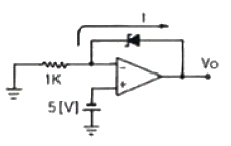
- -5
- 5
- 7
- -7
(정답률: 알수없음)
17. 입력 신호 주파수의 변화에 따라 잠기거나 동기화 될 수 있는 전압제어발진기(VCO)를 가지고 잇는 회로는?
- 비안정 멀티 바이브레이터
- 단안정 멀티 바이브레이터
- 위상검출기
- 위상 동기(고정) 루프
(정답률: 알수없음)
18. 다음 회로에서 입력 단자와 출력 단자가 도통되는 상태는?
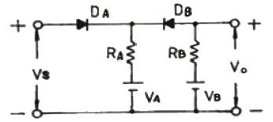
- VS ＞ VB, VA ＜ VB
- VS ＜ VA, VA ＜ VB
- VS ＜ VA, VS ＞ VB
- VS ＞ VA, VS ＜ VB
(정답률: 알수없음)
19. FM신호의 검파회로에서 별도의 진폭제한회로가 필요 없는 회로는?
- 제곱 검파회로
- 복동조 주파수 변별 회로
- 포스터 실리(Forster-Seeley) 주파수 변별 회로
- 비검파기(ratio detector)
(정답률: 알수없음)
20. 공통 소스(Common Source) 증폭기에 대한 설명 중 옳은 것은?
- 출력 단자는 소스(Source)이다.
- 입력과 출력의 위상차는 180°이다.
- 입력 단자는 소스(Source)이다.
- 전압이득은 항상 1보다 작다.
(정답률: 알수없음)
2과목: 디지털공학
21. 다음 표는 D 플립플롭의 진리표이다. Qn+1의 상태가 옳은 것은?
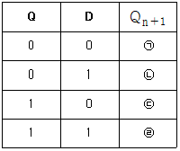
- ㉠ : 0, ㉡ : 0, ㉢ : 0, ㉣ : 0
- ㉠ : 0, ㉡ : 0, ㉢ : 0, ㉣ : 1
- ㉠ : 0, ㉡ : 1, ㉢ : 0, ㉣ : 1
- ㉠ : 0, ㉡ : 0, ㉢ : 1, ㉣ : 1
(정답률: 알수없음)
22. 다음의 비교회로에서 출력 F1의 기능은?
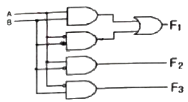
- A = B
- A ＞ B
- A ＜ B
- A ≥ B
(정답률: 70%)
23. 다음 카르노 도표를 간략화 하였을 때 얻어지는 논리식은?
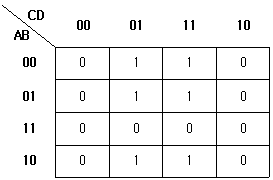
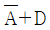
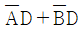
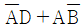
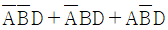
(정답률: 알수없음)
24. JK 플립플롭 여기표에서 현재 상태 Q(t) = 0 이 다음 상태 Q(t+1) = 1 로 여기될 때 J입력과 K입력을 나타낸 것은?
- J = 0, K = 1
- J = 0, K = 0
- J = 0, K = don't care
- J = don't care, K = 1
(정답률: 알수없음)
25. 다음 그림과 같은 회로는?
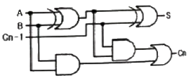
- 반가산기 회로
- 전가산기 회로
- 반감산기 회로
- 전감산기 회로
(정답률: 알수없음)
26. 다음 카르노도(Karnaugh Map)를 논리식으로 간단히 표현하면?
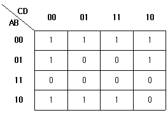
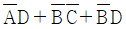
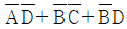
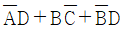
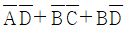
(정답률: 알수없음)
27. 그림과 같은 RS 플립플롭에서 R=1, S=0 일 때 X와 Y의 출력으로 옳은 것은?
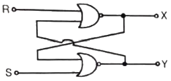
- X = 0, Y = 1
- X = 1, Y = 0
- X = 1, Y = 1
- X = 0, Y = 0
(정답률: 알수없음)
28. 10진 counter를 구성하려고 할 때, 최소 몇 단으로 구성하여야 하는가?
- 2단
- 3단
- 4단
- 5단
(정답률: 알수없음)
29. DRAM에 대한 설명으로 틀린 것은?
- 동작 속도가 SRAM에 비해 빠르다.
- 메모리 칩의 집적도가 SRAM에 비해 높다.
- 주기적인 refresh 가 필요로 하다.
- 전력소모가 SRAM에 비해 적다.
(정답률: 알수없음)
30. 다음 논뢰회로를 간략히 하였을 때 같은 역할을 수행하는 게이트는?
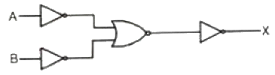
- NAND
- NOR
- AND
- OR
(정답률: 알수없음)
31. 2진수 00010010의 2의 보수는?
- 11101100
- 11101101
- 11101110
- 11101111
(정답률: 알수없음)
32. JK 플립플롭의 특성방정식은?
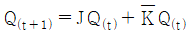
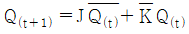
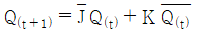
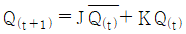
(정답률: 알수없음)
33. 디멀티플렉서(DeMultiplexer)의 설명 중 옳은 것은?
- 엔코더와 동일하게 동작한다.
- 정보를 여러 개의 선으로 받아서 1개의 선으로 전송하는 회로이다.
- 많은 수의 정보 장치를 적은 수의 채널을 통해 전송하는 회로이다.
- 한 개의 선으로 정보를 받아 2n개의 가능한 출력선 중 하나로 이정보를 전송하는 회로이다.
(정답률: 알수없음)
34. 다음 그림은 무슨 회로를 나타낸 것인가?
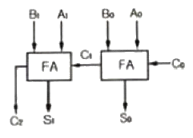
- 2bit 2진 병렬가산기
- 2bit 2진 직렬가산기
- 4bit 2진 병렬가산기
- 4bit 2진 직렬가산기
(정답률: 알수없음)
35. 그림과 같은 논리회로의 기능은 어떤 게이트인가?
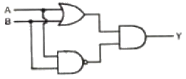
- NAND 게이트
- XOR 게이트
- XNOR 게이트
- NOR 게이트
(정답률: 알수없음)
36. 디지털 코드에 대한 설명 중 틀린 것은?
- EBCDIC 코드는 8비트 코드이다.
- 한글은 통상 2바이트에 표시되고 있다.
- 5비트 코드는 최대 36개의 원소를 표현할 수 있다.
- ADCII코드는 7비트로 표시되어서 종종 패리티비트와 함께 사용하기도 한다.
(정답률: 알수없음)
37. 비수치 데이터에서 마스크를 이용하여 불필요한 부분을 제거하기 위한 연산으로 가장 적합한 게이트는?
- NOT
- EX-OR
- OR
- AND
(정답률: 알수없음)
38. 인코더의 입력선이 16개일 때 출력 선의 개수는?
- 2
- 4
- 8
- 16
(정답률: 알수없음)
39. MOD-5 계수기를 구성하는데 필요한 최소 플립플롭 수는?
- 2
- 3
- 4
- 5
(정답률: 알수없음)
40. 16진수(A6.F)16를 8진수로 나타낸 것은?
- (514.74)8
- (246.74)8
- (246.17)8
- (514.17)8
(정답률: 알수없음)
3과목: 마이크로프로세서
41. 다음 레지스터의 내용을 오른쪽으로 3번 이동(SHIFT RIGHT) 시켰다. 실제로 이 레지스터는 무엇을 하였는가?
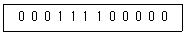
- Multiplied by 4
- Divide by 3
- Added 400
- Divide by 8
(정답률: 알수없음)
42. 인터럽트 종류 중 하드웨어적 요인으로 틀린 것은?
- 전원 중단
- 입출력 인터럽트
- 외부 인터럽트
- SVC 인터럽트
(정답률: 알수없음)
43. 스택 메모리(Stack Memory)가 사용되지 않는 경우는?
- 함수를 Call 할 때
- 분기 명령이 실행될 때
- 함수 내의 자동변수 선언
- 사칙연산 수식을 행할 때
(정답률: 알수없음)
44. 번지지정 방식에 대한 설명 중 틀린 것은?
- 간접주소 모드 : 명령어의 주소 필드가 가리키는 주소에 유효주소가 있다.
- 상대주소 모드 : 프로그램 카운터가 명령어의 주소부분과 더해져서 유효주소가 결정된다.
- 인덱스드 어드레싱 모드 : 인덱스 레지스터의 내용이 명령어의 주소부분에 더해져서 유효주소가 얻어진다.
- 베이스 레지스터 어드레싱 모드 : 베이스 레지스터의 내용과 프로그램 카운터가 더해져서 유효주소가 결정된다.
(정답률: 알수없음)
45. 스텝 모터의 설명으로 틀린 것은?
- 스텝 모터는 입력 펄스에 맞추어 일정 각도 단위로 회전하므로 펄스 모터라고도 한다.
- 스텝 모터는 PM(Permanent Magnet), VR(Variable Reluctance), HB(Hybrid) 형이 있다.
- 스텝 모터는 궤환 소자(엔코더, 포텐셔미터)가 필요하다.
- 스텝 모터의 구동 방식에는 유니폴라(unipolar) 방식과 바이폴라(biopolar) 방식이 있다.
(정답률: 알수없음)
46. 모듈 단위의 오브젝트 파일을 하나로 합쳐서 그것에 인덱스를 붙인 것은?
- 실행 파일
- 라이브러리
- 소스 파일
- 프로시저
(정답률: 알수없음)
47. 통신방식 중 송신국은 일방적으로 송신하고, 수신국은 수신만 할 수 있는 방식은?
- simplex
- half duplex
- duplex
- full deplex
(정답률: 알수없음)
48. bps와 baud rate에 대한 설명 중 틀린 것은?
- bps는 1초당 전소알 수 있는 비트의 수를 말한다.
- baud rate는 1초 동안에 전송되는 신호의 수를 말한다.
- 디지털 및 컴퓨터 분야에서는 bps와 baud rate는 다르다.
- 하나의 비트가 하나의 신호일 경우 bps와 baud rate는 같다.
(정답률: 알수없음)
49. 다음 내용은 무엇을 설명하는가?
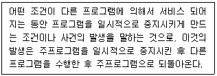
- 타이머
- 카운터
- 인터럽트
- 직렬통신
(정답률: 알수없음)
50. 마이크로프로세서의 종류로 틀린 것은?
- ATMega128
- Cortex M3
- XScale
- AMOLED
(정답률: 알수없음)
51. 다음 그림은 입출력 관계를 그린 것으로 (a), (b) 그리고 (c)에 들어갈 내용으로 옳은 것은?
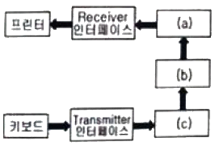
- (a) 출력 레지스터, (b) 누산기, (c) 입력 레지스터
- (a) 출력 레지스터, (b) 누산기, (c) 제어 플립플롭
- (a) 출력 레지스터, (b) 프로그램 카운터, (c) 입력 레지스터
- (a) 임시 레지스터, (b) 누산기, (c) 입력 레지스터
(정답률: 알수없음)
52. 타이머/카운터의 기능으로 틀린 것은?
- 메모리의 번지를 증감시키는 기능
- 일정 시간을 같은 출력으로 유지하는 기능
- 하나의 출력과 다음 출력간의 시간을 계산하는 기능
- 직렬 포트로 보레이트(Boud Rate)를 발생시키는 기능
(정답률: 알수없음)
53. 데이터 통신 방식에 사용되는 장치 중 데이터 통신 시에 통신 회선과 중앙처리장치를 결합시키는 장치는?
- 전송 제어 장치
- 통신 제어 장치
- 입출력 장치
- 변복조 장치
(정답률: 알수없음)
54. 직렬통신 방식 중 논리값이 “1”은 –3V ~ -15V, “0”은 +3V ~ +15V 사이의 전압 신호로 구현되는 방식은?
- RS-232C
- RS-422
- RS-423
- IEEE-488
(정답률: 알수없음)
55. 인터럽트 요구와 처리 순서가 옳은 것은?
- 주변 장치의 인터럽트 요구 → 인터럽트 처리 루틴 수행 → CPU 레지스터 저장 → CPU 레지스터 복귀 → 메인 프로그램으로 복귀
- 주변 장치의 인터럽트 요구 → CPU 레지스터 복귀 → 인터럽트 처리 루틴 수행 → CPU 레지스터 저장 → 메인 프로그램으로 복귀
- 주변 장치의 인터럽트 요구 → CPU 레지스터 저장 → 인터럽트 처리 루틴 수행 → CPU 레지스터 복귀 → 메인 프로그램으로 복귀
- 주변 장치의 인터럽트 요구 → 인터럽트 처리 루틴 수행 → CPU 레지스터 복귀 → CPU 레지스터 저장 → 메인 프로그램으로 복귀
(정답률: 알수없음)
56. Xon/Xoff는 컴퓨터와 비동기 직렬 접속되어 있는 다른 장치들 간에 데이터 흐름을 제어하기 위한 프로토콜이다. Xon의 실제 신호는 아스키(ASCII)의 어떤 비트 구성과 같은가?
- Ctrl-Q
- Ctrl-R
- Ctrl-S
- Ctrl-T
(정답률: 알수없음)
57. RISC 마이크로프로세서를 설명 중 옳은 것은?
- 명령어의 개수가 보통 100~250개로 많다.
- 주소 지정 방식은 5~20가지로 다양하다.
- 파이프라인(pipeline)이 효율적이다.
- 명령어의 길이는 가변적이다.
(정답률: 알수없음)
58. 메모리로부터 명령을 인출하는 과정은?
- Write cycle
- Unstruction cycle
- Read cycle
- Fetch cycle
(정답률: 알수없음)
59. CPU의 구성장치로 틀린 것은?
- 레지스터
- 연산장치
- 제어장치
- 출력장치
(정답률: 알수없음)
60. 여러 회선이 하나의 회선을 공유하기 위하여 사용하는 회로로 다수의 입력 중 하나의 입력을 선택하여 이를 출력하는 회로는?
- 멀티플렉서
- 디멀티플렉서
- 인터페이스
- 버스 회로
(정답률: 알수없음)
4과목: 프로그래밍언어
61. 인공지능 분야의 소프트웨어를 작성하기 위해 사용되는 프로그래밍 언어로 리스트 구조와 함수 적용을 기반으로 한 언어는?
- ALGOL
- PROLOG
- LISP
- APL
(정답률: 알수없음)
62. 예약어에 대한 설명으로 틀린 것은?
- 프로그램이 수행되는 동안 변하지 않는 값을 나타내는 데이터이다.
- 프로그래머가 변수 이름으로 사용할 수 없다.
- 번역과정에서 속도를 높여준다.
- 프로그램의 신뢰성을 향상시킨다.
(정답률: 알수없음)
63. C 언어의 printf 문에서 10진 정수로 출력하기 위한 변환 문자는?
- %c
- %d
- %s
- %x
(정답률: 알수없음)
64. 어셈블리어에서 어떤 기호적 이름에 상수값을 할당하는 명령은?
- ASSUME
- ORG
- EVEN
- EQU
(정답률: 알수없음)
65. C언어에서 문자열 입력 함수는?
- gets( )
- printf( )
- scanf( )
- puts( )
(정답률: 알수없음)
66. 기계어에 대한 설명으로 틀린 것은?
- 0과 1의 이진 문자열로 이루어져 있다.
- 고급 언어(High level language)에 해당한다.
- 제어를 위해서는 효율적이지만 작성이 매우 어려운 단점이 있다.
- 호환성이 없고 기계마다 언어가 다르다.
(정답률: 알수없음)
67. 어셈블리어에서 즉치 주소지정방식(immediate addressing)으로 표현한 명령어는?
- MOV ECX, EBX
- MOV AX, [BX]
- MOV AL, 3
- MOV DX, [BX + DI]
(정답률: 알수없음)
68. 다음 설명에 해당하는 어셈블리어 명령은?
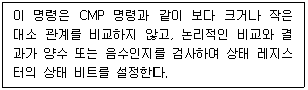
- MOV
- RET
- JMP
- TEST
(정답률: 알수없음)
69. 다음 문자열 처리 명령 중 SI에 있는 데이터를 AL 또는 AX, 레지스터에 load하는 명령은?
- LODS
- STOS
- SCAS
- MOVS
(정답률: 알수없음)
70. 다음은 무슨 언어에 관한 설명인가?
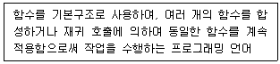
- 절차 언어(Procedural Language)
- 적용형 언어(Applicative Language)
- 선택적 언어(Declarative Language)
- 참조형 언어(Reference type Language)
(정답률: 알수없음)
71. 다음 C 언어의 결과는?
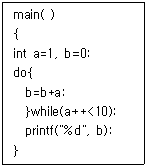
- 9
- 10
- 45
- 55
(정답률: 알수없음)
72. C 언어에 대한 설명으로 옳지 않은 것은?
- 대표적인 인터프리터 언어이다.
- 시스템 프로그래밍 언어로 적합하다.
- 이식성이 높은 언어이다.
- 구조적 프로그래밍이 가능하다.
(정답률: 알수없음)
73. C 언어에서 사용하는 이스케이프 시퀀스에 대한 의미로 틀린 것은?
- ∖n : new title
- ∖b : backspace
- ∖t : tab
- ∖r : carriage return
(정답률: 알수없음)
74. 다음 인터럽트 동작의 설명을 순서대로 나열한 것은?
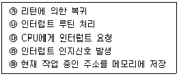
- ㉰→㉲→㉱→㉯→㉮
- ㉲→㉱→㉰→㉯→㉮
- ㉰→㉯→㉲→㉱→㉮
- ㉰→㉱→㉯→㉲→㉮
(정답률: 알수없음)
75. 어셈블리어에서 스트링 명령을 사용할 때 SI 레지스터는 다음 중 무엇과 짝을 이루어서 사용되는가?
- SP
- DI
- SF
- DS
(정답률: 알수없음)
76. (A*B)*C를 Prefix로 표현한 것은?
- *+ABC
- AB+C*
- A+B*C
- ABC*+
(정답률: 알수없음)
77. 다음 중 절대로더(Absolute loader)에 대한 설명으로 틀린 것은?
- 출력결과가 보조기억장치에 저장된다.
- 프로그래머가 링킹한다.
- 프로그래머가 할당한다.
- 로더가 재배치한다.
(정답률: 알수없음)
78. C 언어에서 기억클랙스의 종류가 아닌 것은?
- auto
- static
- remember
- extern
(정답률: 알수없음)
79. BNF 표기법에서 정의를 의미하는 것은?
- ::=
- |
- = =
- < >
(정답률: 알수없음)
80. 벨 연구소에서 1970년대 초반부터 리치 등에 의해서 개발된 시스템 기술용의 프로그래밍 언어로서, UNIX 운영체제를 구성하는 주된 언어는?
- APL
- PL/I
- PASCAL
- C
(정답률: 알수없음)